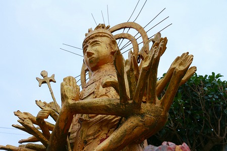

前橋に
凄いコンクリ仏があると聞いて行ってみましたよ。
お寺の名前は
善昌禅寺。
読んで字のごとく禅寺（臨済宗）である。
山門を潜ると早速現れました。
見事な千手観音である。
これまで随分日本のコンクリ仏を見てきたが、
これほどの規模でこれほど盛り盛りの千手観音はチョット記憶にない。
しかも、しかも。
（…ココ、めっちゃ強調させてもらいますけど…）
建立されたのが昭和7年なんですよ！！！
ここで改めて日本のコンクリ仏の歴史をおさらいしておく。
我が国においてコンクリートの大仏が登場したのは昭和2年。
愛知県の
聚楽園大仏。
翌年昭和3年に大分の
別府大佛、
刈宿の大仏、その後に高崎の
白衣観音が登場するのが昭和11年。翌年初代
びわこ大仏と続く。
で、この千手観音は昭和7年。
サイズは違えど、コンクリ仏黎明期にこの複雑な像をどうやって造形したのか、不思議でならない。
これはさぞかし名のあるコンクリ仏師が手掛けたのであろう。
よく見てみるとその尊顔はアノ人の作品に見えなくもない。
そう、当サイトではお馴染み、
福崎日精氏その人である。
福崎氏の経歴はこれまで散々語ってきたので当サイトのトップページの右上にあるサイト内検索で探していただきたい。
戦前から戦後にかけて活躍したコンクリ仏師の巨星である。
特徴としてはぼってりとしたお顔立ち、精緻な装飾などが挙げられる。
黒目の部分をのどちんこ状にして表現するのも福崎氏の特徴だ。
これらの特徴を兼ね備えたこの千手観音、限りなく福崎氏の作に近いような気がするのだが…
ところが頭上の十一面の顔の造形とかを見ると、福崎氏の作品とは思えない。
正直、
素人っぽいんですよね…。
腹には大悲と書かれていた。
台座には忠魂。
陸軍大将 鈴木壮六とある。
調べてみると彼は日本各地の学校や神社に揮毫を残している。
特に前橋と所縁があった訳ではなさそうだ。
台座裏側。
扉があるが中には入れない。
台座の前にあった香炉。
裏側に昭和九年と刻まれていた。
側にあったカルタ札の看板。
この辺では下川渕カルタというのがあるそうな。
凄く良いイラスト。
これを描いた子、大変だったろうなあ。
他にも境内にはコンクリの大黒様がいたり…
獰猛そうなコンクリの大蛇がいたり。

かつては口から水を吐いたそうな。
本堂。
住職に話を伺った。
それによると千手観音は現住職の祖父である
平尾寛英和尚が建てたという。
寛英和尚は素人ながら木彫りの仏像などを造っていたらしい。
コンクリートの造仏はそれまでやったことがなかったという。
素人の祖父が造ったんですよー、と仰っていたが…
素人さんがこれだけの観音像を造ることが出来るのか？
いやいやいや絶対無理でしょう。

普通素人が造ったら↑こんな感じになっちゃいますよ。
本堂に開眼式の絵が飾ってあった。
寛英和尚は満州に行った際に
兵隊が沢山死ぬのを目の当たりにしてきたという。
その供養の意味もあったのだろうか。
同じく建立当時の写真。
今は赤いトタン屋根になっているが茅葺だったんですね。
千手観音は以前はコンクリの地肌だったが、数年前に白く塗り直したという。
ちなみに気になっていた大蛇と大国様は別の人が造ったそうな。
住職のお話を伺っても、どうも釈然としない。
素人があんな凄い千手観音をゼロから造れないよなあ。
帰りしな、カルタの看板にQRコードが付いていたのでスマホでアクセスしたらここの寺の由来などが書かれていた。
それによるとやはり寛英和尚の夢枕に観音様が現れて1年で造ったとされている。
しかし、そこに重要な事が記されていた。
この禅昌禅寺、ここから数キロ離れた伊勢崎市にある
龍泉寺の末寺だというのだ。
伊勢崎の龍泉寺…。行ったことがあるぞ。
そう！
この寺には福崎日精の手による観音像があるのだ↓
ここからは私の勝手な想像だが…
ここの千手観音も、全部ではないが一部福崎氏が手掛けた、あるいはアドバイザー的な事をしていたと考えられなくもない。
あるいは龍泉寺の福崎氏の観音像を見て影響を受けたか。
いずれにせよ何らかの関りはあると考えられる。
でなければ、コンクリ像を造ったことのない人がここまでの大作を造れるはずがない。
確証は一切ないが、自分の中では何となく腑に落ちたので、帰りまーす。